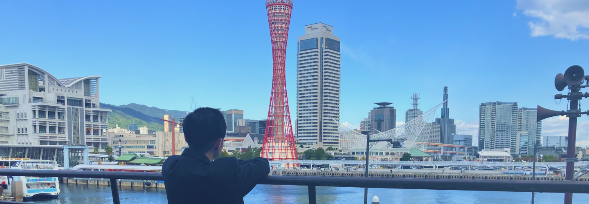
About
Miki Honoka
三木 歩乃花
- 生年月日
- 2006/02/19
- 出身地
- 兵庫県加古郡明石市の隣。どこってよく聞かれるので
- MBTI
- INTJINFJ寄りのINTJです
- 好きな動物
- ハムスター、馬ハムスターを飼ってます。あと乗馬やってます
- 目指す職業
- UI/UXデザイナー
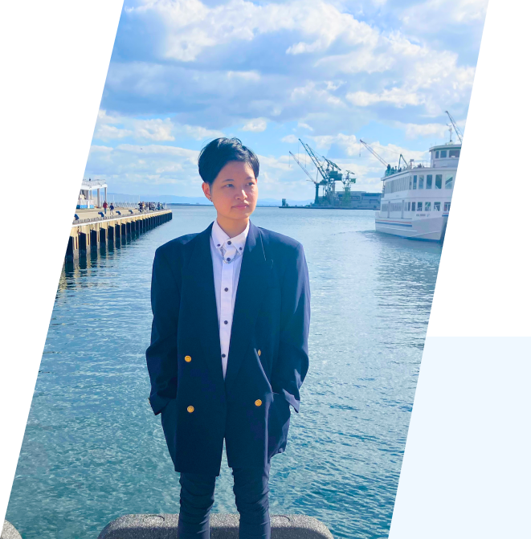
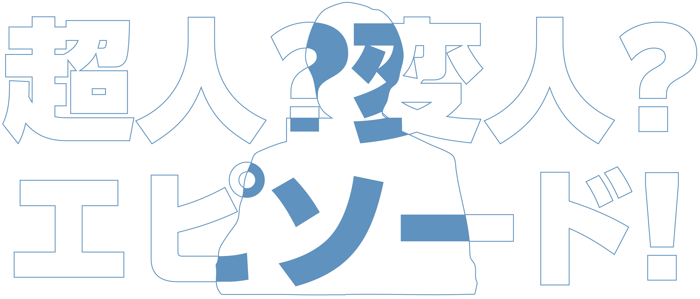
私はよく１つのことに集中しすぎて、気がついたらすごいことになってることがあります。今回は、自分でもすごいけど...変やなと感じる超人？変人エピソードを5つ紹介します。
1.1日の過ごし方がなんかへん
サイボーグですか？
7:20
起床し学校に行く
準備をする
歯磨きをして、着替えて、朝ごはんを食べて、身だしなみを整えます。たまに飼っているハムスターのご飯当番をすることがあります。
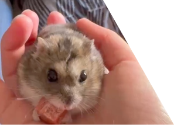
8:00
最寄駅から
電車に乗る
家から学校まで１時間程かかるので、電車に乗っている時間は寝たりニュースを見たりしてます。
9:10
学校に到着
授業を受ける
授業を受けます。うちの学科はひたすらに制作を行います。その間先生に作品についての相談なども行います。
12:10
お昼休憩
お昼休憩はお母さんが作ってくれたお弁当を食べます。食べ終わった後は友達と話したり、作業の続きをしたりしてます。
13:10
授業再開
お昼を食べ終わった後は少し眠いので、コーヒーを飲みながら作業を行っています。コーヒーが大好きで、BOSSをよく飲んでます!
16:10
放課後も作業
授業が終わった後は、課題制作や自主制作などに勤しみます。時々クラスの皆にゲームに誘われることがあるので、その時はスマブラとかスプラとかしてます。最近は忙しいのでずっと断っていますが...
18:30
学校が閉まるので
カフェに移動
だいたいこの時間に学校が閉まってしまうので、三宮センター街のカフェに移動します。コーヒーかフルーツジュースを注文して、そのまま作業を続けます!
20:30
キリいいところで
作業を終了する
長くても21:00までには作業を終えます。この時間帯は電車でも座れるのでありがたいです。
21:30
帰宅しお風呂と
夜ご飯を食べる
帰宅してすぐお風呂に入ります。お風呂で疲れた体を温めてからご飯を食べます。この時間になると腹が減ってるので飯がうまいんですよ...!!
24:00
のんびりしながら
就寝
寝るまでは好きなことをしながらルイボスティーを飲みます。ゲームしたり、読書したり、イラストを描いたり。アシスタント業は主にこの時間に行うことが多いです。家でしか出来ない作業なので、1日に1-2時間程度行ってコツコツ進めます。週2日ぐらいは18:30に帰ってアシスタント業を家で集中して行うことが多いですね。
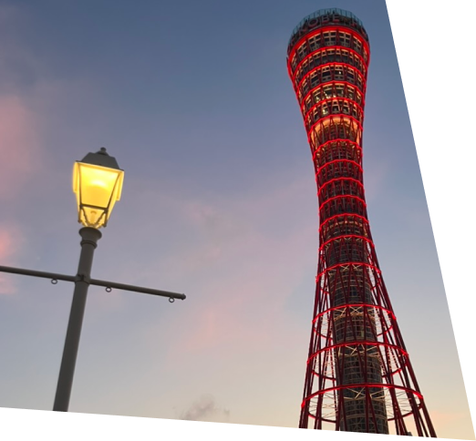
振り返ってみると
振り返ってみると作業しかしてないです。やばい時は寝る時間以外ずっと作業してます。休日(土曜)はメリハリをつけて、ゲームや乗馬、読書や銭湯巡りなど人間らしく趣味を楽しんでいるのですが..
2.過去がドラマみたい
私の歴史
幼少期
兵庫県加古郡で育つ
中学時代
人間としての成長
部活は吹奏楽部でトランペットを吹いていました。ソロコンテストにも出場したこともありましたが、当時は沢山周りに迷惑をかけました。そんな自分に対し、仲間は励ましてくれたり指摘してくれました。そのおかげで人間として成長できました。
高校〜浪人時代
絵を描きまくった高校生活
美術の授業が多い高校に進学し、高２の冬から美術予備校に通い始めました。高校の時はほとんど学校か予備校にいました。今思い返せば絵を描きまくっていたなあと思います。
ep.01 1度目の挫折
国公立大学の金沢美大などの受験にチャレンジしましたが、自分の力不足を自覚しました。でも、自分の立ち位置を知ることができてよかったなと感じました。
ep.02 大事故で死にかける
自転車で顎5針・前歯が根ごと取れるほどの事故に遭いました。これにより1週間以上何も出来ない緊急事態が発生しました...幸いほとんど元通りに治りましたが、事故直後に救急車を呼ばなかった事に後悔してます。
ep.03 2度目の挫折
なんとか頑張って受験勉強を進め、2度目の受験にチャレンジしました。そこでも全落ちしてしまいました。悔しくて、1ヶ月はご飯が喉を通りませんでした。
現在
兵庫県の神戸電子専門学校グラフィック学科に進学しました。そこで、UIデザインの動く楽しさや、デバイスがあればどこでも見れる点に興味を惹かれ、現在はwebサイトを作ったりUIを学んだりしています。レイアウトの配置や色の使い方など、美大受験の時に学んだたくさんの経験が日々のデザイン制作に役立っています。苦しかったけどあの時期があってよかったと感じています。
3.ポプテピピックの原作者のアシスタントをしている
大川ぶくぶ先生のイラストアシスタントをしています
面接時に意欲とデッサン力で評価され、イラストなどのアシスタントをさせていただいてます。先生曰く、学生の経験として今後に役立ててほしいとのことで、専門学生を卒業するまでの契約になっています。私自身中学時代にポプテピピックにどハマりしていた人なので、正直夢かな？と思いましたが現実でした。びっくりだね。左右にあるファンアートのお手伝いだったり、グッズ企画やスタンプのお手伝いなどいっぱいしてます。内容が気になった方は下のボタンから詳細を覗いてみてください！

4.周りから見た私がなんか変
学校の妖精って言われてます。Why...?
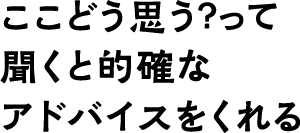
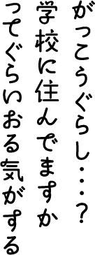
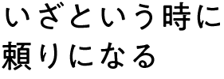
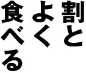
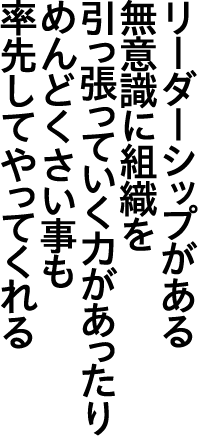
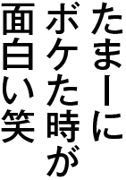
5.課題に対する熱量がすごい
夏休みに出た課題で、「自分の好きな事を紹介するZINE」という小冊子を制作しました。せっかくの夏休みだし、おっきい企画をやろう！と思いした企画が...
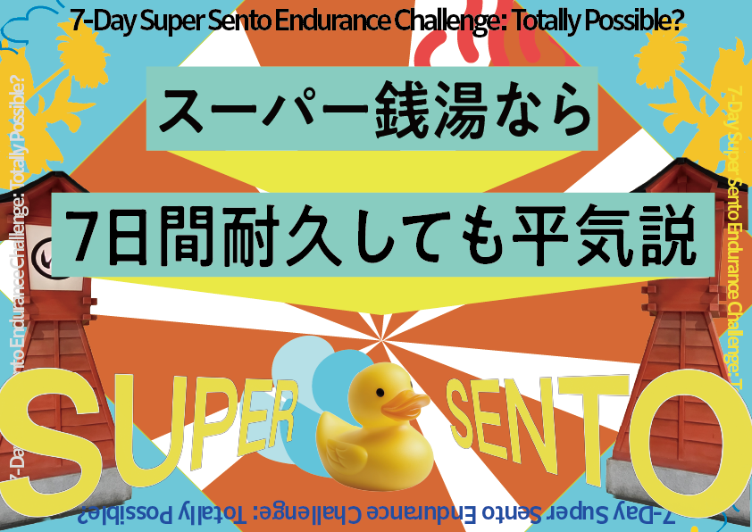
というものです。この企画の概要を1文で説明すると...7日間で毎日別の銭湯へ行き、毎日その銭湯に何時間居られるかを検証したものです。平均して、1日で10時間も同じ銭湯に居続けるんです。

これは5日目の検証を記録したものです。1週間毎日これを続けたんです。やばいですよね。癒されましたが毎日終電だったので大変でした。結果と今回訪れたスパ銭MAPはこんな感じです。関西圏で行ける方は是非訪れてみては...?
この作品の詳細を見てみる
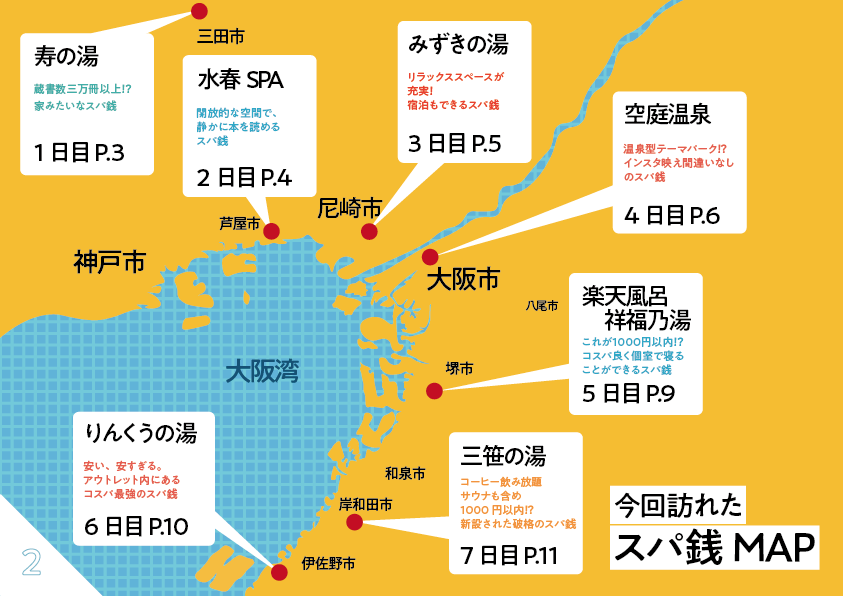
もう一例だけ紹介します。今度は専門学校の進級制作で作成したデータ一式です。
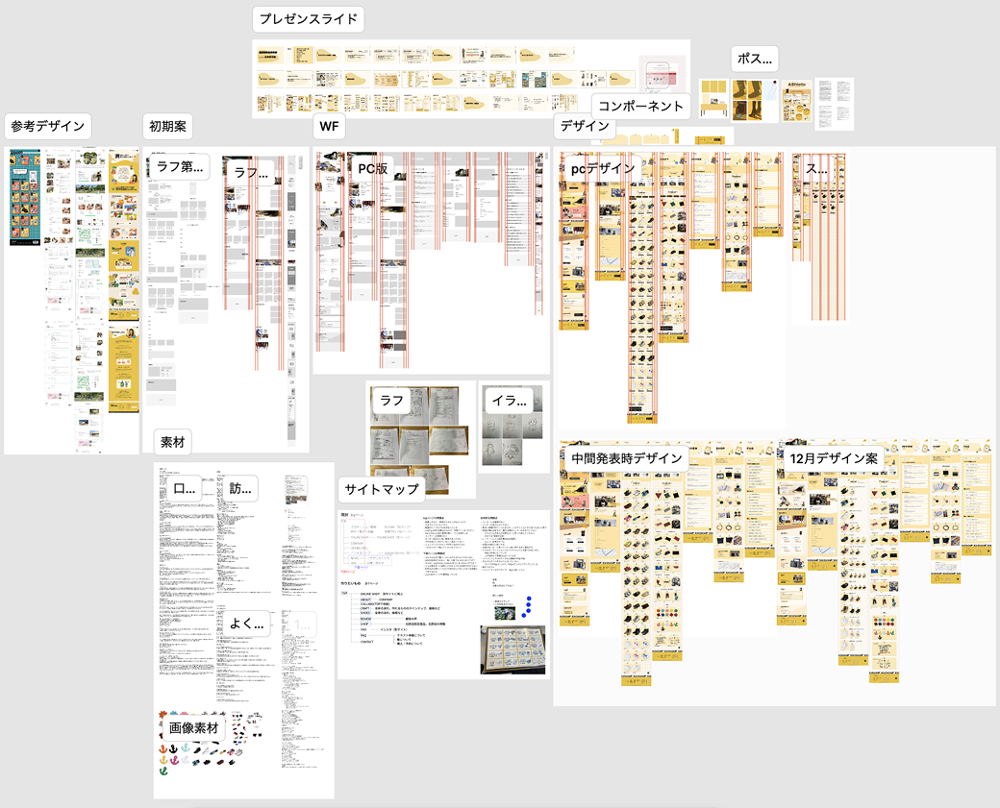
デザインはデータに残っていないので、それも合わせるともっとあるかと思います。素材撮影、加工からヒヤリングからデザインまで2ヶ月でしています。私は、デザインを改善して先生にアドバイスをいただく事の繰り返しで完成していくタイプとだとこの時感じました。
この作品の詳細を見てみる